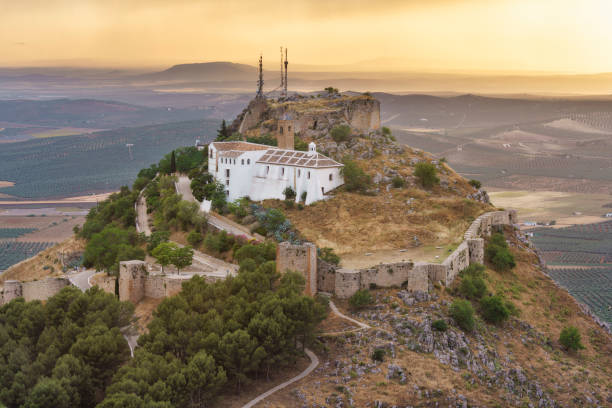

El aceite de oliva de Archidona es un producto de calidad excepcional, fruto de una tradición olivarera que se ha transmitido de generación en generación. Esta localidad, ubicada en la provincia de Málaga, se caracteriza por sus extensos olivares que, gracias a su clima y terreno, producen un aceite con un sabor y aroma únicos. De color dorado y con un toque afrutado, este aceite es un ingrediente fundamental en la gastronomía local y se emplea en multitud de recetas, desde ensaladas hasta platos más elaborados. Además, su alto contenido en antioxidantes y ácidos grasos beneficiosos lo convierten en un alimento saludable.
Más información
Los embutidos y carnes de Archidona son auténticas joyas de la gastronomía local, elaborados con recetas que se han mantenido a lo largo del tiempo. Entre los embutidos más populares se encuentran el chorizo, la morcilla y el salchichón, que se preparan de manera artesanal, utilizando especias y condimentos que les dan un sabor inconfundible. En cuanto a las carnes, el chivo lechal malagueño es uno de los platos más emblemáticos de la zona, apreciado por su ternura y sabor. Estos productos son parte fundamental de la dieta y la tradición culinaria de Archidona, y se disfrutan en muchas celebraciones y reuniones familiares.
Más información
El pan artesanal y el mollete de Archidona son dos de los tesoros gastronómicos de la localidad. El pan se elabora de forma tradicional, utilizando ingredientes de calidad y respetando los tiempos de fermentación, lo que le da una textura crujiente por fuera y esponjosa por dentro. Por otro lado, el mollete, un tipo de pan suave y ligero, es ideal para acompañar desayunos y meriendas. Tostado y con un chorrito de aceite de oliva virgen extra de la zona, se convierte en un verdadero manjar. Ambos productos reflejan la esencia de Archidona y su larga tradición panadera, que ha pasado de generación en generación.
Más información